SUCCESS · 名目物理シミュレーション
R3アームによるキャップ把持と持ち上げの検証
4軸アームと1軸jawが、自由物体のキャップへ接近し、左右のsofttipだけで持ち上げて2秒保持した。元の固定条件を数値判定し、同じseedで全状態が完全一致する再実行を確認した。
実機の成功や校正済みの現実再現を意味しない。カメラとbaseの外部校正、servo位相、65/75度の現物版、softtip物性、cap寸法・質量は未確定。今回の成功は、明示した名目シーンと接触モデル内の結果である。
連続保持2.000 s基準 2.0 s以上底面の最小離隔36.581 mm初期支持面から 20 mm以上左右同時接触99.65%基準 80%以上手先内の最大漂移1.385 mm基準 5 mm以下 評価区間 9.000–11.000秒。接近誤差 0.00755 mm。保持中の支持接触0、名目試行の全期間で禁止接触0、関節境界違反0、数値警告0。cap底面は傾斜を含む円筒の最下点から計算した。
物理状態から描画した二視点動画
動画は1 ms刻みの実mj_stepログから10 fpsで描画。映像用のpose再生は描画だけに使用し、把持判定は13,001点の生状態・接触forceによる。D405相当カメラは65度holder候補の光学中心・視線に配置した名目視点である。
approach · 2.9秒
外部視点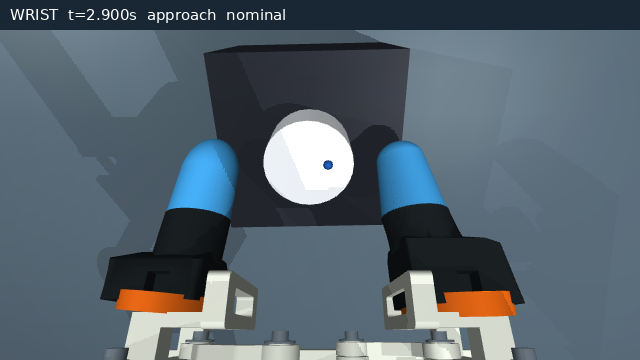
D405相当の手首視点 grasp · 6.4秒
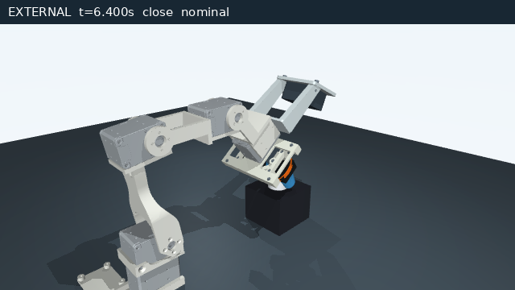
外部視点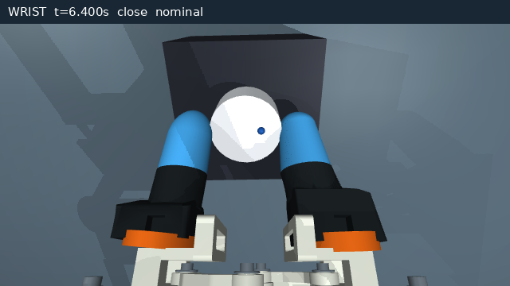
D405相当の手首視点lift · 8.0秒
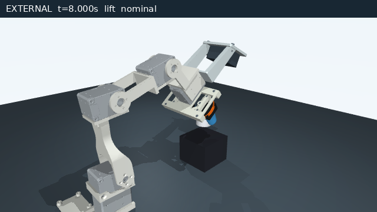
外部視点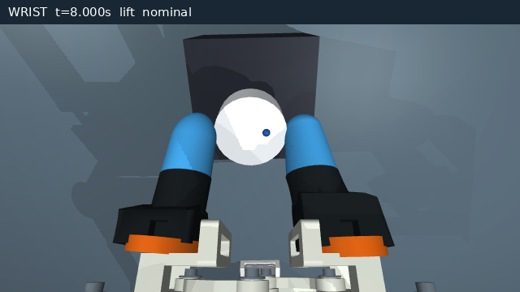
D405相当の手首視点hold · 10.0秒
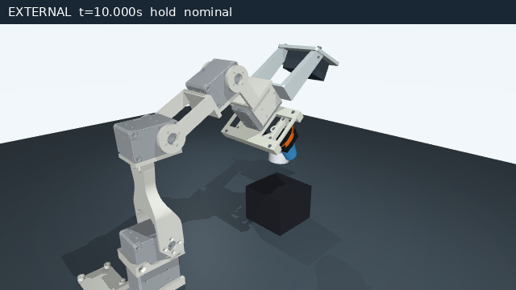
外部視点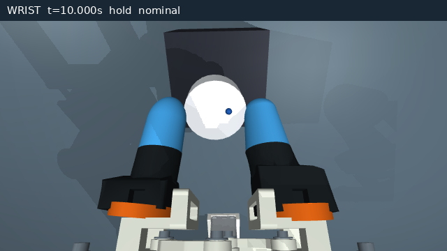
D405相当の手首視点release · 12.7秒
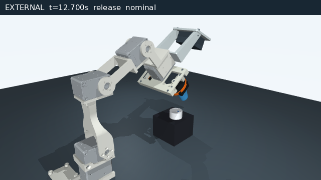
外部視点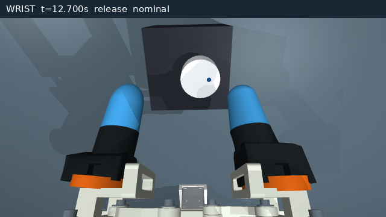
D405相当の手首視点時系列と独立検証
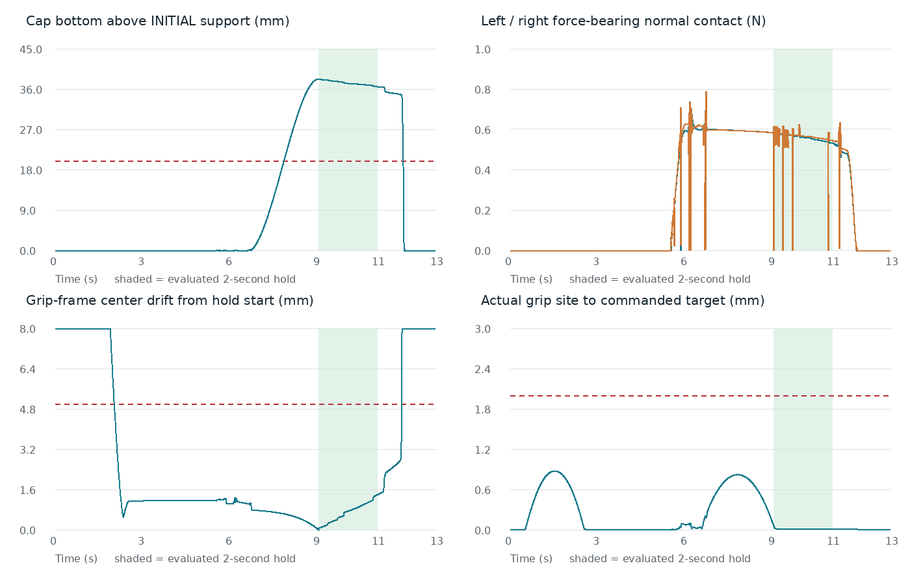
漂移グラフの表示範囲は0–8 mmで、把持前・解放後の範囲外の値は上端に切り詰めている。評価する保持区間の値はすべて表示範囲内で、生ログの数値は変更していない。
改善版はこのPC内の同seed再実行で9系列がbit単位で完全一致。元の別環境の軌跡とは一致せず、保持漂移0.759→1.385mmなどの差がある。再IKの微小丸め差が観測されたが因果は未隔離。独立監査は実装の判定器をimportせず、生qposからFKと全保持指標を再計算し、9状態の接触力も別のmj_forwardで照合した。独立監査JSON · 比較試験と再現性JSON · 全結果JSON
負の対照と成功域
同一の最終経路でjawを開いたまま持ち上げると、capは支持面に残り、NO_GRIP / INSUFFICIENT_LIFTとなった。摩擦・質量の低高条件と、半分の時間刻みも実行した。
mass-lowは2秒の保持条件自体を達成した後、予定した2.5秒保持の終盤に滑り、異常停止したため全試行FAILUREとした。低摩擦の成功は主張しない。元成果物の半刻み試験は底面最小36.436 mm、左右99.65%、漂移1.427 mmでSUCCESS。
失敗からの修正
- 粗いmotor外接箱とframeの凸分解膨張が作る偽接触を、原CADのcase・horn・rail寸法で修正。禁止pairや閾値を削って回避していない。
- 外部Pythonの明示的な速度feedbackによる振動を、同じgain・力上限のMuJoCo implicit position servoへ移して解消。
- nominal001–006では先端の傾斜面から滑り、幾何offsetや閉じ代では改善しなかった。MuJoCo 3.13の公式説明に従い、Newton/ellipticで接線と法線のconstraint impedance比を1から10へ変更した。摩擦μ0.7、cap1.5g、gain、力上限、判定契約は据え置き。NoSlip後処理は使用していない。
MuJoCo 3.13 Preventing slip。接触のsoftnessとimpratioは未測定の名目数値モデルであり、実材料を校正した結果ではない。半刻みでも成功したが、保持中の漂移量は約0.76→1.43 mmと変化し、数値依存が残る。
観測資料とモデルの範囲
公開版には合成画像だけを含む。実写、会話、元archiveはローカル保存。下記観測推定は元成果物の記録であり、本パッケージから実写解析を再実行したという意味ではない。
独立depth解析はbox高さ49.35 mm、cap上面64.13 mm、baseからcapまで約177 mmを支持した。名目box50 mm、cap中心[0,180,57.5] mmをIK前に固定した。baseの+Y方向登録は仮定である。元画像の非ゼロRGB歪みは保持し、raw pixel/depthをbase座標として流用していない。
元R3 visual meshを変更せず、4つのarm jointとC7の非線形閉リンクを再利用した。C7は5つの機構座標にrank4の閉路拘束を持ち、独立jawは1自由度。6つの左右非対称scanfit外形を搭載し、未確認の内部coreは追加していない。capは重力下のfreejointで、weld・mocap・外力吊上げ・実行中のqpos書換はない。
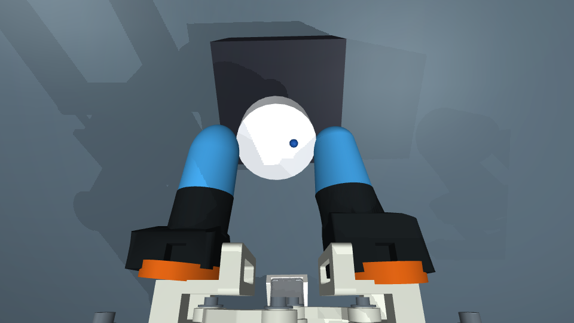
10秒保持状態の原visual形状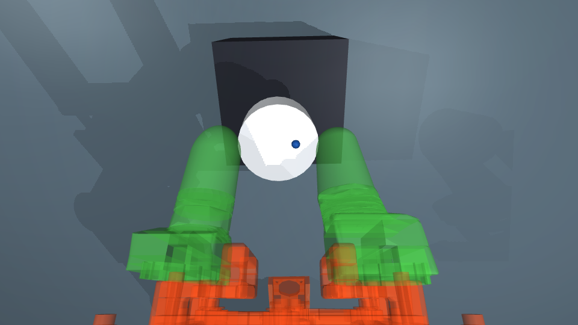
同一状態の接触proxy。開口と左右分離を保っている。proxy誤差はmodel/proxy_report.jsonに保存。頂点サンプリング値は厳密なHausdorff上限ではなく、微小な穴やねじ頭の詳細は近似される。frameの0.5 mm機構隙間を元CADのrail面で復元し、motor全外接箱による偽接触をcaseとhornに分けて解消した。
腕の力上限1.0 Nm、jaw0.08 Nm。ROBOTISの瞬間stall値を連続定格と扱っていない。観測されていないケーブル全長、材質の真の変形、実機servo校正、製作・搭載安全性は今回未検証。
実行と再生
uv sync --frozen
MUJOCO_GL=egl uv run --no-sync python run.py --seed 0 --output results/replayed-nominal
uv run --no-sync python evaluate.py results/replayed-nominal
MUJOCO_GL=egl uv run --no-sync python report.py
Python 3.12、MuJoCo 3.13.0、numpy 2.5.3、scipy 1.18.1、Pillow 12.3.0。依存の全解決結果はuv.lock。モデル・source入力・ログ・画像・動画をarchive内に同梱し、別のsource checkoutを要求しない。既存trialは上書きせず、新しいoutput名を使用する。
今回のコードレビュー
入力不足を外部checkoutから補わず、sourceとcacheのhashを検証する。隠れたcap支持・不正CLI値・中断を拒否/失敗記録する。今回の実動力学再実行と元trace比較は 検証JSON。禁止接触0は宣言したpolicy内の結果であり、隣接body全体等の除外や未モデル化ケーブルを含む全実機可動域の安全保証ではない。